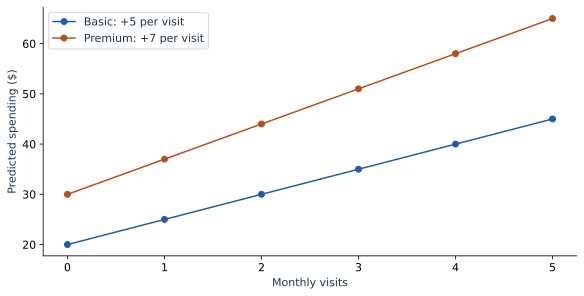

When One Feature Changes Another Feature’s Effect
Our original model adds 5 dollars per visit for everyone. What if an extra visit contributes more for Premium customers? We can express that difference directly, then explain it without asking readers to interpret a mysterious product coefficient.
Let the visit rate depend on the plan
Use this separate illustrative equation for the chapter:
The new term is $2vp$: two times visits times the Premium indicator. We have added it to the original equation to study its behavior. These are stipulated coefficients, not a new fit to the four original observed amounts.
For Basic, $p=0$, so both terms involving $p$ disappear. For Premium, $p=1$, so the new term adds another 2 per visit:
Premium: 30 + 7 × visits.
That is the interaction in plain language: one more visit adds 5 to a Basic prediction and 7 to a Premium prediction. The relationship between visits and the prediction depends on the plan.
| Visits | Basic prediction | Premium prediction | Plan difference |
|---|---|---|---|
| 0 | 20 | 30 | 10 |
| 1 | 25 | 37 | 12 |
| 2 | 30 | 44 | 14 |
| 3 | 35 | 51 | 16 |
| 4 | 40 | 58 | 18 |
Read the interaction in either direction
Read down the Basic column: every extra visit adds 5. Read down the Premium column: every extra visit adds 7. Now read across a row. At one visit, Premium adds 12; at four visits, it adds 18.
These are two descriptions of the same interaction. The extra-visit effect depends on plan, and the plan effect depends on visits.


Rebuild Maya’s prediction
Maya has four visits and Premium. Apply the four terms individually:
| Term | Calculation | Amount ($) |
|---|---|---|
| Starting amount | 20 | 20 |
| Visits | 5 × 4 | 20 |
| Premium | 10 × 1 | 10 |
| Interaction | 2 × 4 × 1 | 8 |
| Total | 20 + 20 + 10 + 8 | 58 |
The 8-dollar term belongs to the combination of visits and Premium. Listing it separately is a faithful decomposition of the equation. Assigning it entirely to visits or entirely to plan would be an additional choice. SHAP offers a way to share joint contributions, but we do not need that machinery to explain the equation itself.
Read the main coefficients at their reference values
The coefficient 5 is the visits slope when Premium is 0: the Basic plan. The coefficient 10 is the Premium difference when visits is 0. They are often called main-effect coefficients. Once the product term exists, neither is the complete effect for every customer.
Zero visits may be a less useful comparison than two visits, the average of our training rows. Center visits by defining $u=v-2$, so $v=u+2$. Substitute this into the equation and collect terms:
The plan coefficient is now 14. It describes the Premium difference at two visits, because that is where $u=0$. Maya has $u=2$, so her prediction is 30 + 10 + 14 + 4 = 58. Centering changes the reference point and the coefficient meanings, while preserving every prediction.
Explore both plans
Change visits with Basic selected, then repeat with Premium. Finally, hold visits fixed and switch plans. The explanation below the equation reports both differences.
Make the product from the original inputs
def predict_interaction(visits, premium):
return 20 + 5*visits + 10*premium + 2*visits*premium
for visits in [1, 4]:
basic = predict_interaction(visits, 0)
premium = predict_interaction(visits, 1)
print(visits, basic, premium, premium - basic)
# 1 25 37 12
# 4 40 58 18When fitting such a model, its input columns would be visits, Premium, and their product. When predicting, construct that product again from the supplied values. Changing a plan while leaving the product frozen would no longer evaluate the stated model.
Write the explanation around a comparison
For Maya, a useful sentence is: “With four visits, the model predicts 58 dollars for Premium and 40 for Basic, a difference of 18.” That sentence identifies the model, the customer’s visit count, both outcomes, and their difference.
Now that we can explain the equation’s behavior, the next question is whether its inputs themselves are easy to understand. The next chapter starts one step earlier, with the measurements from which features are built.
Sources and worked examples
This chapter develops ideas from the lessons below in A Data Odyssey’s Explainable AI playlist. The customer data, calculations, figures, and interactive examples here are original teaching examples. The creator’s companion notebooks use different datasets.
- Interpretable Feature Engineering — Conor O’Sullivan, A Data Odyssey.